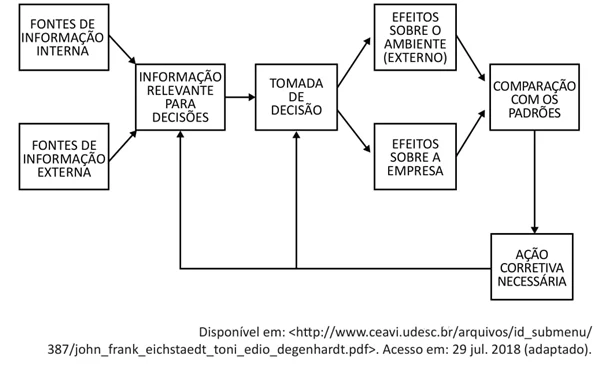

Disciplinas
SISTEMAS DE INFORMAÇÃO Concluído
Materiais
Vídeo 1 - [UFMS Digital] Sistemas de Informação - Módulo 1 - Unidade 2 - O que são e pra que servem os sistemas de informações gerenciais e os sistemas de apoio à decisão sendProf° ministrante: Awdren de Lima Fontão
Informação
- Segundo o dicionário:
- informação
- substantivo feminino
- 1. conjunto de conhecimentos reunidos sobre determinado assunto ou pessoa.
- 2. ato ou efeito de informar(-se); informe.
O que são SIs Gerenciais?
Os Sistemas de Informações Gerenciais (SIG) representam conjuntos de dados que passam por processos de transformação, resultando em informações organizadas e estruturadas.

O que são SIs Gerenciais ou SIG?
Oferecem suporte à tomada de decisões estratégicas, alinhamento com objetivos organizacionais, melhoria da eficiência operacional e facilitação da inovação;
Proporcionam vantagem organizacional, oferecendo uma visão holística da empresa e capacitando a adaptação a ambientes dinâmicos de negócios.
Motivação para SIs Gerenciais
Para além da manutenção da satisfação do cliente, as empresas necessitam empregar ferramentas de otimização na gestão das informações de suas bases de dados;
Isso permite que executivos e gestores tomem decisões fundamentadas em dados atuais e confiáveis, reduzindo significativamente o tempo de resposta às variáveis do mercado e da empresa.
Características de SIGs
- Ajudam organizações a atingir suas metas;
- Fornecem uma visão das operações de uma organização;
- Permitem a visualização de gráficos e relatórios gerenciais para a tomada de decisão;
- Auxiliam gerentes no controle, organização e planejamentos de atividades operacionais;
- Fornecem a informação certa, para a pessoa certa, de maneira certa e no momento certo.

Um exemplo de SIG
Um exemplo de cenário de Sistemas de Informações Gerenciais (SIGs) pode ser um sistema implementado em uma cadeia de suprimentos de uma empresa de varejo.
Vamos explorar alguns aspectos desse cenário com base em conceitos que podem ser encontrados em livros como "Sistemas de Informação Gerenciais" de Kenneth C. Laudon e Jane P. Laudon.
- Apoio ao processo decisório: o SIG pode fornecer relatórios detalhados sobre os níveis de estoque, as tendências de vendas e o desempenho dos fornecedores, permitindo que os gestores tomem decisões informadas sobre reabastecimento, promoções ou ajustes na cadeia de suprimentos.
- Integração de dados: o sistema integra informações de vários setores, como vendas, estoque e compras, proporcionando uma visão completa e unificada da cadeia de suprimentos.
- Flexibilidade e adaptabilidade: o SIG pode ser ajustado para lidar com mudanças sazonais nas demandas, incorporando dados em tempo real para se adaptar a flutuações nas vendas e nas preferências dos clientes.
- Apoio às operações empresariais: além de fornecer dados para decisões estratégicas, o SIG auxilia nas operações diárias, gerenciando automaticamente os pedidos de reposição com base nos níveis de estoque.
- Alinhamento estratégico: o sistema é alinhado com os objetivos estratégicos da empresa, garantindo que as decisões na cadeia de suprimentos estejam alinhadas com metas mais amplas de eficiência e satisfação do cliente.
- Facilidade de uso: a interface do SIG é projetada para ser utilizada pelos gestores da cadeia de suprimentos, oferecendo dashboards intuitivos e relatórios que facilitam a compreensão das informações.
- Geração de relatórios e análises: o SIG gera relatórios que detalham o desempenho das vendas, os custos de transporte, a eficiência da cadeia de suprimentos, entre outros, permitindo análises aprofundadas.
Sistemas de apoio à decisão (SAD)
Auxiliam gestores e profissionais no processo decisório, fornecendo suporte para a análise de informações complexas e a resolução de problemas não estruturados;
São projetados para melhorar a qualidade das decisões ao fornecer ferramentas e recursos para a análise, interpretação e visualização de dados relevantes;
A ênfase está na capacidade de lidar com decisões que envolvem incertezas, ambiguidades e múltiplos critérios, contribuindo assim para a eficácia da gestão estratégica.
Informação estruturada x não-estruturada
- Aplicações:
- Informação estruturada: comum em sistemas de gerenciamento de bancos de dados, processamento de transações e relatórios formais.
- Informação não-estruturada: encontrada em comunicações informais, documentos não formatados, conteúdo multimídia, sendo prevalente em interações humanas.
- Complexidade e Volume:
- Informação estruturada: tende a ser mais fácil de ser gerenciada em grandes volumes e suporta análises específicas.
- Informação não-estruturada: pode ser desafiadora devido à sua natureza diversificada e ao aumento do volume, requerendo abordagens avançadas para extração de insights.
Características de SAD
- Flexibilidade e interatividade: os sads são projetados para serem flexíveis, permitindo que os usuários interajam diretamente com os dados e ajustem as análises conforme necessário;
- Análise de dados complexos: esses sistemas são capazes de lidar com dados complexos e não estruturados, proporcionando análises detalhadas para suportar decisões informadas;
- Orientação para problemas não estruturados: os SADs são particularmente úteis para problemas de decisão não estruturados, onde não há procedimentos claramente definidos para resolução.
- Suporte à tomada de decisão em grupo: muitos SADs incluem recursos que facilitam a colaboração e a tomada de decisão em grupo, permitindo que várias partes interessadas contribuam para o processo decisório;
- Acesso a dados externos: podem integrar dados externos à organização, como indicadores econômicos, condições de mercado, entre outros, para uma análise mais abrangente;
- Modelagem e simulação: os SADs frequentemente oferecem capacidades de modelagem e simulação, permitindo que os usuários testem diferentes cenários antes de tomar decisões.
- Integração com outros sistemas: podem ser integrados com outros sistemas de informação, como sistemas de informações gerenciais (SIGs), para uma visão mais completa das informações organizacionais.
- Relatórios e visualizações personalizáveis: os relatórios e visualizações gerados pelos sads podem ser personalizados de acordo com as necessidades específicas dos usuários e dos problemas em questão.
Um exemplo de SAD
A gestão financeira em uma empresa que precisa decidir sobre investimentos em novos projetos. Aqui estão alguns aspectos desse cenário:
- Análise de viabilidade de investimentos: o SAD pode ser utilizado para avaliar a viabilidade financeira de diferentes projetos, levando em consideração variáveis como custos iniciais, fluxos de caixa futuros e taxas de retorno esperadas.
- Simulação de cenários: os gestores podem usar o sad para simular diferentes cenários, considerando variáveis como mudanças nas condições de mercado, taxas de juros e custos operacionais, ajudando na identificação de riscos e oportunidades.
- Modelagem financeira avançada: o sistema pode incluir ferramentas de modelagem financeira avançada, permitindo a criação de modelos detalhados para prever o desempenho financeiro dos projetos ao longo do tempo;
- Colaboração entre departamentos: o SAD facilita a colaboração entre departamentos, permitindo que equipes financeiras, de operações e de marketing contribuam para a análise de decisão de forma integrada.
A diferença entre SIG e SAD
- Sistemas de Informações Gerenciais (SIG): focam em informações estruturadas para apoiar operações e gestão, atendendo a decisões estruturadas em todos os níveis organizacionais;
- Sistemas de apoio à decisão (SAD): são especializados em oferecer suporte a informações não estruturadas, lidando com dados complexos e promovendo análises ad hoc para gestores de níveis mais altos;
- Decisões suportadas:
- SIG: operacionais e gerenciais, envolvendo processos e procedimentos bem definidos para a gestão eficiente da organização;
- SAD: estratégicas e táticas, enfrentando situações mais complexas, incertas e ambíguas, possibilitando análises instantâneas para gestores de alto escalão.
Conclusão
- Sistemas de Informações Gerenciais (SIG) desempenham um papel fundamental na gestão eficiente de informações para operações e decisões estruturadas em todos os níveis organizacionais.
- Por outro lado, os Sistemas de Apoio à Decisão (SAD) concentram-se em fornecer suporte específico para decisões não estruturadas, capacitando gestores de alto escalão com ferramentas avançadas de análise e simulação.